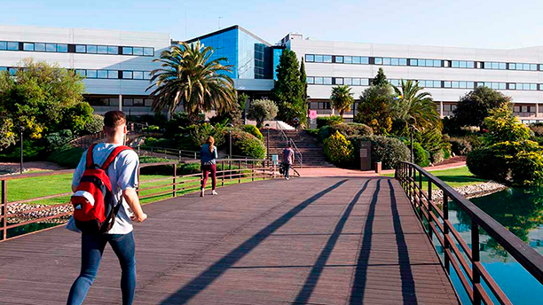

Campus
El campus está formado por diferentes edificios. Cada uno de ellos tiene sus pequeños secretos y aquí te vamos a mostrar algunos de ellos:
- Edificio A: La mejor cafetería del campus para comer, ¡Con mucho espacio y los mejores platos! También cuenta con las mejores zonas de estudio individual del campus, en la planta baja a mano izquierda.
- Edificio B: En la planta baja a mano derecha se pueden reservar equipos de grabación y multimedia, ¡Totalmente gratis! Además, si necesitas ayuda con alguna gestión de la universidad, ve a la primera planta a mano derecha, verás la zona de atención al estudiante. También verás una tienda FNAC, por si necesitas unos auriculares nuevos.
- Edificio C: Si tienes tiempo libre... puedes ir a la entrada de este edificio y jugar unas partidas al futbolín. ¡También se encuentra la biblioteca, la bolera, una gran sala de estudio grupal o la tech fab, donde podrás desde imprimir modelos 3D hasta cortar maquetas a láser!
- Edificio D: Si tienes ganas de un chapuzón entre clase y clase, ¡Este es tu edifcio! puedes ir a la piscina cubierta o al gimnasio habilitado para estudiantes (por sus precios correspondientes) o, si no tienes dinero, al menos pasearte por el edificio para notar la esencia del cloro en el ambiente.
- Edificio E: Este edifcio es para ciencias sociales y comunicación, pero no es lo más importante que contiene... Si accedes al edificio desde la rampa del parking y en lugar de entrar vas por la derecha ed la puerta... ¡Encontrarás el telepiuem! Un telepizza en mitad del campus, para las comidas más golosas.
Aparcamiento
El campus cuenta con aparcamientos divididos en tres sectores. Empezando desde abajo, el edificio A y en color azul en la imagen, se parecia uno de los parkings más amplios de la universidad, destinado a estudiantes del edificio A. En rojo, encima del anterior, encontramos el aparcamiento para los edifcios B y C, suele ser el más concurrido. Finalmente, en negro y encima del azul, se encuentra el parking para los edifcios D y E, también utilizado para quienes se alojen en la residencia.